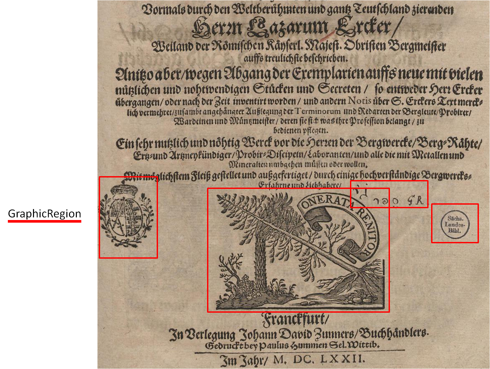

Buchschmuck, Zeichnungen (GraphicRegion)
Mit einer graphicRegion werden u. a. einfache Graphiken, handschriftliche
Anmerkungen sowie Lochungen ausgezeichnet. Folgendes wird unter einer einfachen Graphik verstanden:
Figure 1. Beispiele für GraphicRegion: Logo, verschiedene Stempel und Signaturen

- ein Logo (logo)
- ein graphisch gestalteter Briefkopf (letterhead)
- Buchschmuck (decoration)
- Rahmen (frame)
- handschriftliche Annotation (handwritten-annotation)
- Stempel (stamp)
- Unterschrift (signature)
- Barcode (barcode)
- paper-grow
- Lochung (punch-hole)
- Anderes (other)